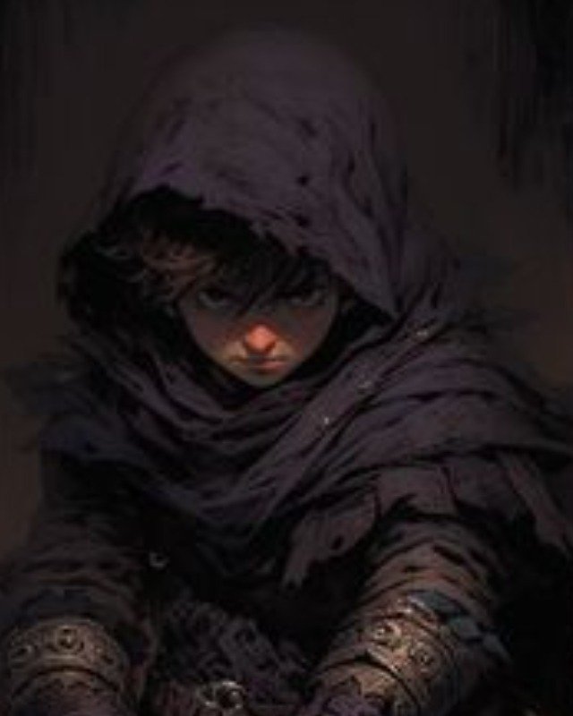

Jimi
Rogue / skrytosc / mechanizmy
Realna postac z data/heroes/jimi.json. Znajduj dowody, ktore inni przeocza, i wykorzystuj chaos walki.
HP 15AC 18ThieveryStealth
Atrybuty STR -1, DEX +4, CON +1, INT +1, WIS +2, CHA +1
Biegłości Perception trained; Fort/Will trained, Ref expert
Bronie i pancerz simple/martial/unarmed trained; unarmored/light trained
Skille trained Acrobatics, Deception, Diplomacy, Intimidation
Skille śledcze Medicine, Occultism, Performance, Society, Stealth, Survival, Thievery
Rola testów skradanie, zamki, dowody, szybkie wsparcie społeczne
Snapshot
- Class: Rogue thief, lvl 1.
- Ancestry: Halfling, twilight halfling.
- Gear: whip, rapier, shortsword, leather armor.
- Feat: Twin Feint.
Skille
- Thievery: pulapka w mlynie, skrytki, mechanizmy.
- Stealth: podejscie, zwiad, tylne wejscia.
- Society: dokumenty Odrana, znaki rodu Vale.
- Deception: blef przy straznikach.
Umiejetnosci
- Sneak Attack: +1k6 precision w dobrych warunkach.
- Surprise Attack: mocna pierwsza runda.
- Twin Feint: dwa ataki, drugi wymusza off-guard.
- Keen Eyes: lepsze Seek przeciw ukrytym celom.
Taktyka
- Nie walcz sam; flankuj z Kordem albo Christopherem.
- W mlynie najpierw sprawdz pulapke i mechanizmy.
- W krypcie nie blokuj frontu.
- Uzywaj Twin Feint, gdy masz bezpieczna pozycje melee.
Pytania do NPC
- Do straznika: "Kto kazal wam pilnowac mlyna po zmroku?"
- Do Elny: "Kto zna tylne przejscia i magazyny?"
- Do Odrana: "Dlaczego twoj herb jest tam, gdzie powinien byc znak Serai?"
Motywacja: najwieksze klamstwa trzymaja sie na malych detalach.